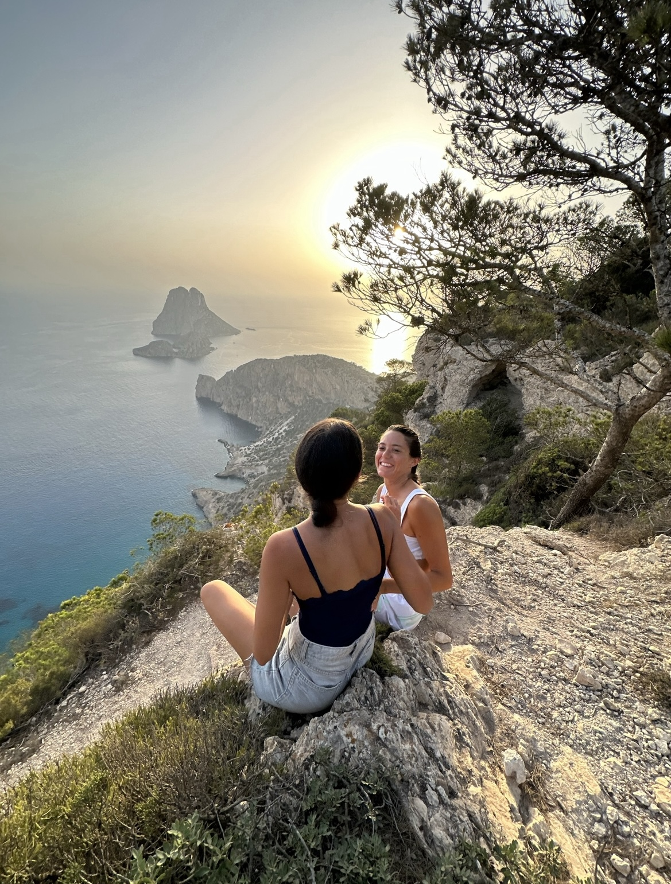
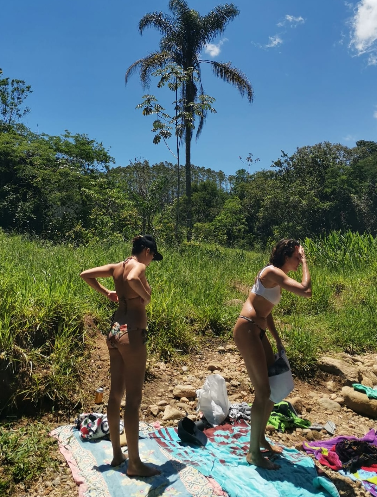
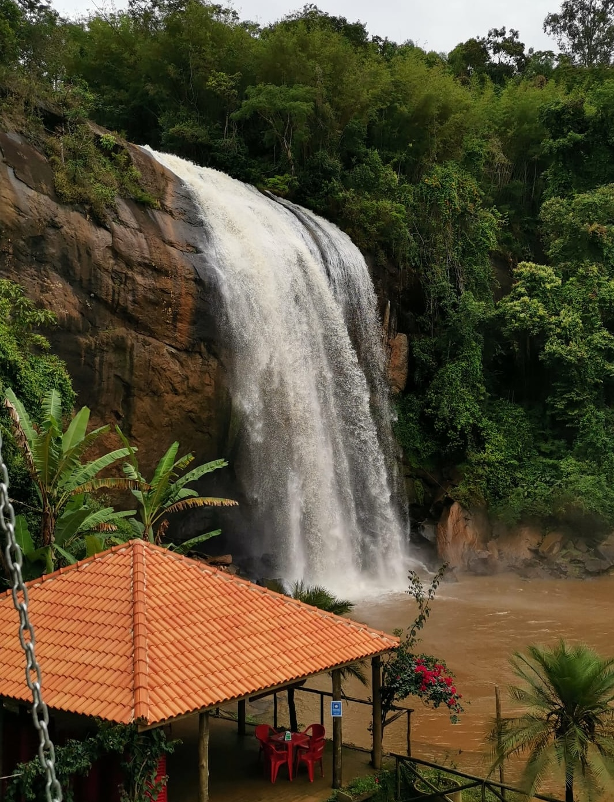
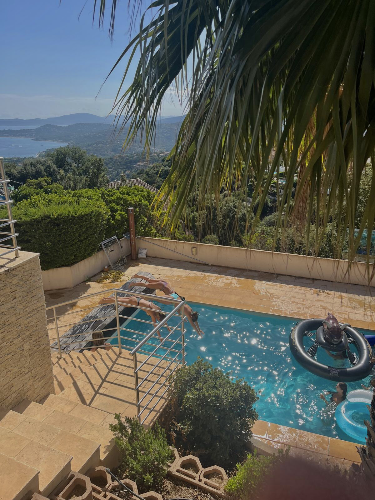
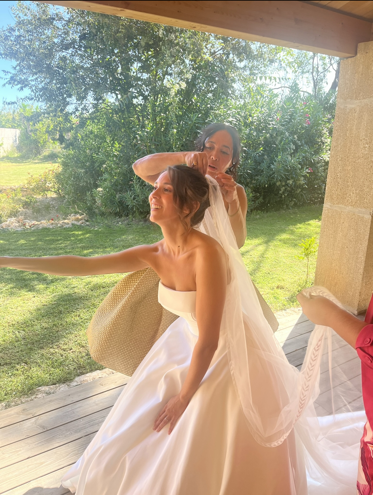
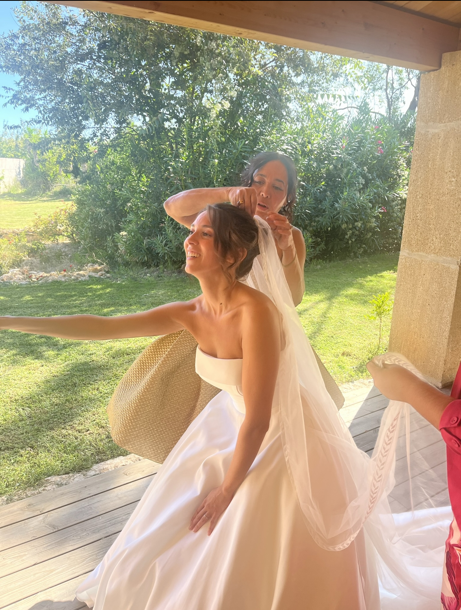

Hello, I'm Jade !
I'm a first year student at IESEG School of management in La Défense. I have many passions, discover a little more about them !
Discover My LinkedinDancing 💃
Dancer for almost 14 years now, dancing helps me unwind and is a way to express myself through movements and not words.
Travelling ✈️
I am passionate about travelling beacause it offers a unique mix of adventure, personal growth, cultural exchange, and new experiences that are hard to find in everyday life.
-   
Learning languages 🇫🇷🇩🇪🇬🇧🇵🇹
Being bi-national has always made it easier for me to learn languages, which is why I am passionate about them and want to work internationally later.
Taking photos 📸
I love taking photos of everything to keep a memory of each life's moment.
-

 
